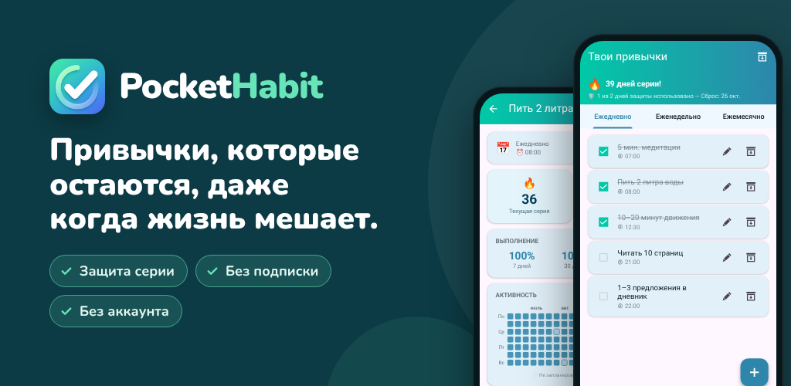

PocketHabit: Трекер привычек
Трекер привычек с защитой серии: устойчивые привычки, гибко и без подписки.
Google PlayХочешь выработать полезные привычки, но жизнь постоянно мешает? PocketHabit — трекер привычек, который оставляет тебе право быть человеком.
СОЗДАН ДЛЯ НОВИЧКОВ
Никаких сложных настроек. Никакого аккаунта. Никакой подписки. Просто открой приложение, добавь первую привычку и начинай. Короткое знакомство с приложением займёт меньше минуты.
КАК ЭТО РАБОТАЕТ
- Добавь первые привычки — или выбери из готовых вариантов при знакомстве с приложением
- Отмечай их одним касанием
- Смотри, как растёт серия: защита серии подстрахует в дни, когда что-то пошло не по плану
НИКТО НЕ ИДЕАЛЕН
Уникальная защита серии в PocketHabit понимает, что настоящие перемены требуют времени. Если ты пропустишь день, серия не прервётся сразу — у тебя есть запас, который помогает вернуться в колею. Ты сам решаешь, насколько строгим быть:
- Новичок: допускается 2 пропуска в неделю
- Лёгкий: 1 пропуск в неделю
- Нормальный: 1 пропуск за 14 дней
- Сложный: 1 пропуск в месяц
Расти в своём темпе — а когда будешь готов, повышай сложность.
ВСЕ ПРИВЫЧКИ В ОДНОМ ПРИЛОЖЕНИИ
Ежедневные ритуалы, еженедельные дела или ежемесячные цели — PocketHabit справится со всем:
- Ежедневно: утренний ритуал, спорт, питьё воды
- Еженедельно: выбери нужные дни недели
- Ежемесячно: фиксированная дата или, например, «каждый 2-й понедельник месяца»
НАПОМИНАНИЯ, КОТОРЫЕ ПОДХОДЯТ ТЕБЕ
Вместо того чтобы настраивать отдельное напоминание для каждой привычки, включи одно общее ежедневное напоминание. Открой приложение и отметь всё сразу. Вот насколько простой может быть рутина. Хочешь отдельное время? У каждой привычки может быть и своё напоминание.
ТВОЁ ПРИЛОЖЕНИЕ, ТВОЙ СТИЛЬ
Выбирай из нескольких цветовых тем и переключайся между тёмным и светлым режимом. Приложение, которое приятно открывать каждый день, помогает не сбиваться с курса.
СТАТИСТИКА, КОТОРАЯ МОТИВИРУЕТ
Сразу видно, как прошли эта неделя и этот месяц. В подробном режиме — тепловая карта выполнений, процент выполнения и твоя лучшая серия.
- Календарь месяца: каждый день окрашен по тому, сколько сделано
- Обзор по дням недели: смотри, какие дни удаются лучше всего
- Процент выполнения за последние 7, 30 и 90 дней
ДОСТИЖЕНИЯ, КОТОРЫЕ МОТИВИРУЮТ
30 достижений отмечают твой прогресс: первую серию из 7 дней, идеальные недели и месяцы и даже возвращение после перерыва.
ЕЖЕДНЕВНАЯ ПОРЦИЯ МОТИВАЦИИ
Каждый день начинается с нового листка отрывного календаря — одной из 240 коротких цитат, которые помогают не сдаваться.
ТВОИ ДАННЫЕ ПОД ТВОИМ КОНТРОЛЕМ
- Экспортируй привычки в файл резервной копии и восстанавливай их на новом телефоне
- Ставь привычки на паузу в архиве — их статистика сохраняется
ДЛЯ КОГО ЭТОТ ТРЕКЕР ПРИВЫЧЕК?
Для всех, кто хочет начать с малого и не сбиваться — будь то пить больше воды, читать каждый вечер, тренироваться три раза в неделю или поддерживать порядок дома. Особенно если слишком строгие приложения для привычек уже заставляли тебя бросить из-за одного пропуска.
PREMIUM: ПЛАТИШЬ ОДИН РАЗ, ПОЛЬЗУЕШЬСЯ ВСЕГДА
Без подписки. Без ежемесячных платежей. Оплати один раз и пользуйся всегда:
- Полностью без рекламы
- Доступ ко всем темам
- История статистики более 2 лет (вместо 6 месяцев)
- Защита серии без просмотра рекламы
- Все будущие Premium-функции включены
СОЗДАНО ВМЕСТЕ С ПОЛЬЗОВАТЕЛЯМИ, ДЛЯ ПОЛЬЗОВАТЕЛЕЙ
PocketHabit растёт вместе с тобой. Новые функции появляются, только когда их действительно хотят реальные пользователи. Твой отзыв важен — напиши нам и помоги сделать приложение лучше.
Конфиденциальность: все данные о твоих привычках остаются на твоём устройстве. Аккаунт не нужен.
Скачай сейчас и сделай первый шаг к лучшей версии себя.